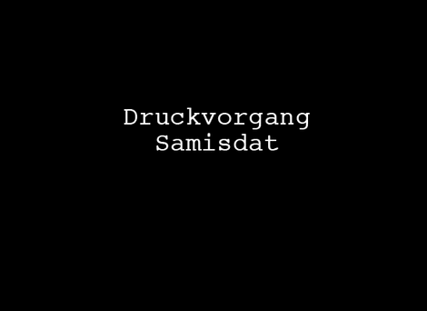

Technische Möglichkeiten
Samisdat Herstellung
Die Druckform zur Vervielfältigung, also die beschriebene Wachsmatrize – konnte mit einer Schreibmaschine hergestellt werden. Es musste lediglich ein grobfaseriges Japanpapier, auf dem sich eine Wachsschicht befand, verwendet werden.
Das Papier wurde in die normale Schreibmaschine eingespannt und anschließend beschrieben. Beim Schreiben durchdrangen die metallenen Buchstaben die Wachsschicht bis auf das Trägerpapier. Die so vom Wachs befreiten Stellen waren nun farbdurchlässig. Die Matrize musste danach in einer speziellen Apparatur auf Seidengaze gespannt oder – wie beim Kurbelgerät – auf einer Walze befestigt werden. Gedruckt wurde dann jedes einzelne Blatt per Handbetrieb.
Schwieriger als die Vervielfältigung von Text war die Herstellung von Druckvorlagen zum Kopieren von Grafiken. Denn auch hierfür musste eine Wachsmatrize mechanisch so bearbeitet werden, dass farbdurchlässige Drucklinien entstanden. Nur über technische Umwege, mit manuellem Geschick und viel Geduld konnten mit dieser Technik viele einfallsreiche Karikaturen, Signets, ganze Comic-Serien und ansprechende Deckblattgestaltungen produziert werden.
Das Papier wurde in die normale Schreibmaschine eingespannt und anschließend beschrieben. Beim Schreiben durchdrangen die metallenen Buchstaben die Wachsschicht bis auf das Trägerpapier. Die so vom Wachs befreiten Stellen waren nun farbdurchlässig. Die Matrize musste danach in einer speziellen Apparatur auf Seidengaze gespannt oder – wie beim Kurbelgerät – auf einer Walze befestigt werden. Gedruckt wurde dann jedes einzelne Blatt per Handbetrieb.
Schwieriger als die Vervielfältigung von Text war die Herstellung von Druckvorlagen zum Kopieren von Grafiken. Denn auch hierfür musste eine Wachsmatrize mechanisch so bearbeitet werden, dass farbdurchlässige Drucklinien entstanden. Nur über technische Umwege, mit manuellem Geschick und viel Geduld konnten mit dieser Technik viele einfallsreiche Karikaturen, Signets, ganze Comic-Serien und ansprechende Deckblattgestaltungen produziert werden.
Herta Müller
Bleiben zum Gehn
.---------------- für Richard.
Wo ist dieser Ort. Über den Morgen hinaus ist der Tag mir so wenig wie nie.
Wo red ich, mit wem, außer mit meinem, mit deinem, dem pechschwarzen Mund.
Ich trag dieses Jahr noch zuende, den Ast und das Blatt.
Und ich frag: wie alt ist dieser Baum, dieser Herbst halb im Leben.
Ich trag noch das Wasser im Blick, noch das Bleiben zum Gehn.
Hier stehen wir, Liebster, am nächsten, am weitesten Baum und im Herbst. Und wir wissen ich hab noch ein Wort, noch ein kleines, ein zerrendes Sagen in mir. Ich hab noch zu, reden fürs Wasser im Blick.
Damit ich den Blick noch heben kann, hab ich zu sagen, wer uns die Lippen so schwer, wer uns das Wort so klein macht und wenig wie nie.
Damit ich die Lippen noch tragen kann, hab ich zu zeigen den meinen, den deinen, den pechschwarzen Mund. Den Maulwurf mit bleichen Schaufeln.
(In: Ostkreuz., Januar 1989)
.---------------- für Richard.
Wo ist dieser Ort. Über den Morgen hinaus ist der Tag mir so wenig wie nie.
Wo red ich, mit wem, außer mit meinem, mit deinem, dem pechschwarzen Mund.
Ich trag dieses Jahr noch zuende, den Ast und das Blatt.
Und ich frag: wie alt ist dieser Baum, dieser Herbst halb im Leben.
Ich trag noch das Wasser im Blick, noch das Bleiben zum Gehn.
Hier stehen wir, Liebster, am nächsten, am weitesten Baum und im Herbst. Und wir wissen ich hab noch ein Wort, noch ein kleines, ein zerrendes Sagen in mir. Ich hab noch zu, reden fürs Wasser im Blick.
Damit ich den Blick noch heben kann, hab ich zu sagen, wer uns die Lippen so schwer, wer uns das Wort so klein macht und wenig wie nie.
Damit ich die Lippen noch tragen kann, hab ich zu zeigen den meinen, den deinen, den pechschwarzen Mund. Den Maulwurf mit bleichen Schaufeln.
(In: Ostkreuz., Januar 1989)